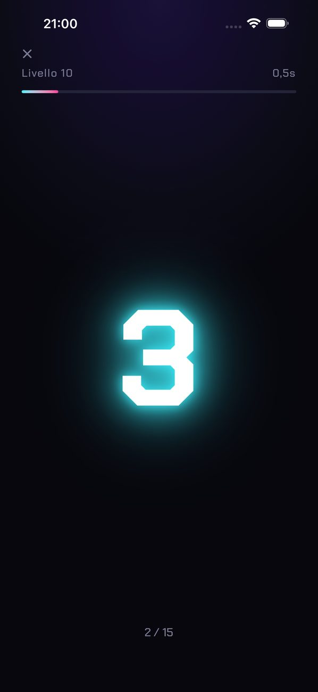
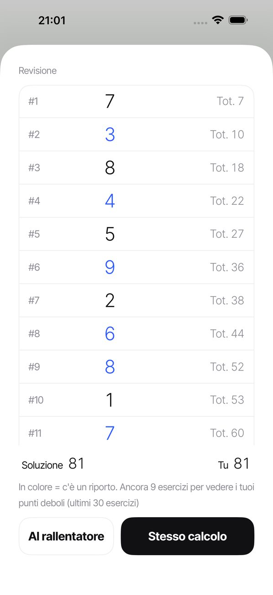
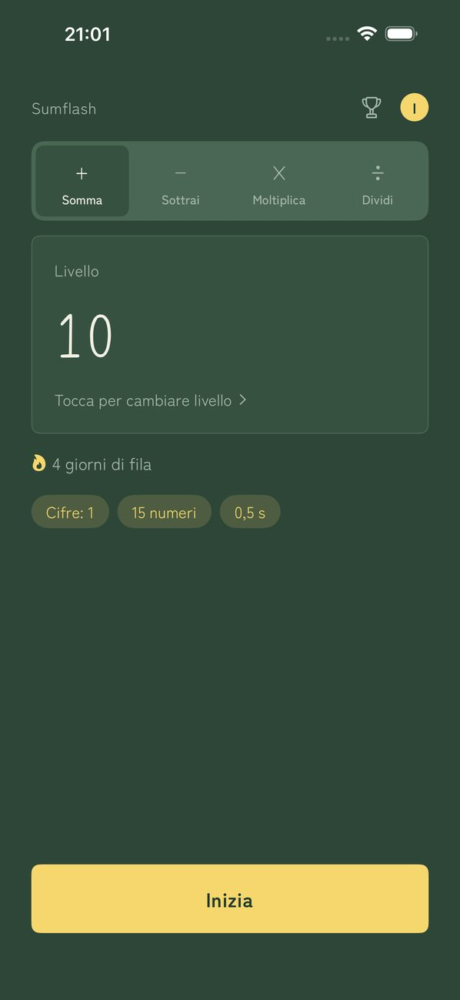

SUMFLASH
I numeri lampeggiano. Sommali a mente.
I numeri compaiono uno alla volta, ciascuno solo per un istante. Inserisci il totale. È il calcolo mentale flash, come si pratica con il soroban (l'abaco giapponese).
Scarica su App StoreScopri perché hai sbagliato
Dopo ogni risposta, rivedi tutti i numeri comparsi insieme al totale parziale in quel momento. I numeri in cui c'è stato un riporto sono evidenziati, così vedi esattamente dove hai sbagliato. Ripeti lo stesso calcolo, anche al rallentatore.
Come funziona
- Tocca IniziaI numeri compaiono uno alla volta.
- Inserisci il totaleDigita la risposta sul tastierino.
- Risultato e revisioneGuarda i numeri e i totali parziali per capire dove hai sbagliato.
Schermate



Funzioni
- Scegli tra 30 livelli (da 1 cifra × 3 numeri × 1 s fino a 3 cifre × 15 numeri × 0,5 s)
- Imposta tu la velocità, da 0,2 a 5,0 secondi
- La tua serie di giorni sulla schermata Home. Se salti un giorno a settimana, la serie continua
- Un promemoria giornaliero all'ora che scegli (non suona nei giorni in cui ti sei allenato)
- I numeri compaiono e scompaiono e basta, senza animazioni che disturbano
- Cinque temi (Minimal / Washi / Neon / Lavagna / Sakura)
- Profili separati per ogni membro della famiglia
- Sfida classificata (1 cifra × 10) con le classifiche di Game Center
- Scegli addizione, sottrazione (somme e sottrazioni miste), moltiplicazione o divisione dalle schede della schermata Home. Ognuna ha i suoi 30 livelli
- Lettura dei numeri ad alta voce
- I risultati restano sul tuo dispositivo (se hai effettuato l'accesso a Game Center, solo il tuo miglior tempo della sfida classificata viene inviato ad Apple per la classifica). Nessun account necessario
Premium
Nessuna pubblicità. Abbonamento mensile a rinnovo automatico. Puoi annullare quando vuoi da Impostazioni › ID Apple › Abbonamenti su iPhone. Premium toglie solo la pubblicità. Tutte le altre funzioni sono gratuite.
Informazioni sulla pubblicità
La pubblicità compare in fondo alla schermata Home e tra una sessione e l'altra. Nessuna pubblicità mentre i numeri scorrono, mentre inserisci la risposta o durante la revisione. Con Premium non c'è pubblicità.